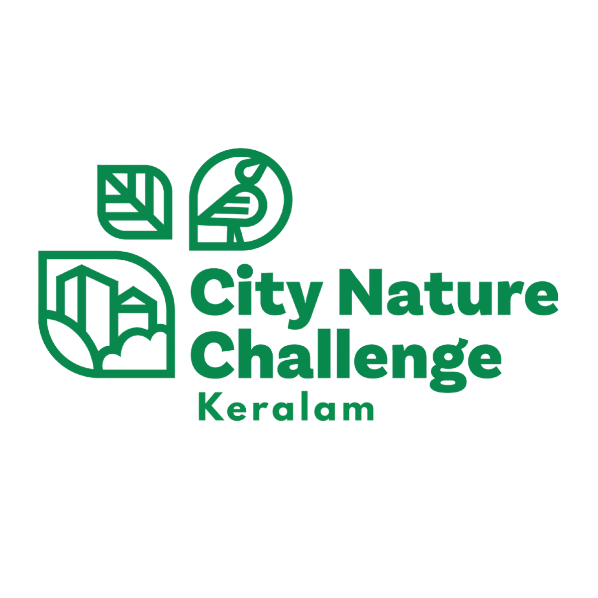
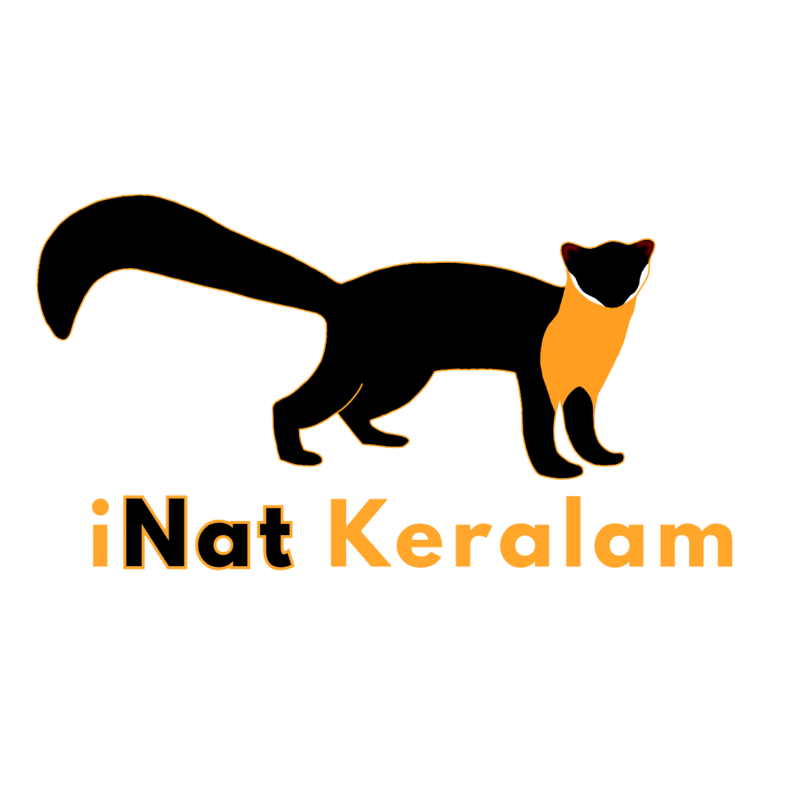

Keralam 2026 · Beyond Boundaries: Unites for Nature
Documenting Kerala's biodiversity through the power of citizen science. Observe, identify, and record the living world around you — and help us build the most comprehensive picture of Kerala's nature ever assembled.
The City Nature Challenge is a global citizen science event where cities around the world compete to record the highest number of nature observations, identify the most species, and engage the greatest number of participants.
Cities worldwide compete to observe, record, and identify wild nature over four days. Kerala participates by treating the entire state as one city — bringing together its remarkable biodiversity from the Western Ghats to the coastal backwaters into a single unified effort.
Assistant Professor in Forestry at Sir Syed College, Taliparamba. She leads the overall planning and coordination of CNC Keralam 2026, organizes nature walks, and strengthens partnerships to maximize participation and generate meaningful biodiversity data.
The program is managed collectively through a working group consisting of representatives from partnering organizations. Conducted independently using available resources, emphasizing collaboration, volunteer engagement, and collective impact in support of citizen science and conservation.
iNaturalist is a globally recognized citizen science platform that allows users to upload photos and observations of living organisms, which are then identified by a global community of experts and enthusiasts. The data generated supports biodiversity research, conservation planning, and environmental education.
The City Nature Challenge uses this platform to inspire public participation, environmental awareness, and large-scale biodiversity documentation within a short time frame.
Open iNaturalist →Anything wild and living! Plants, animals, fungi, insects, birds, reptiles, amphibians, marine life, and more. Every observation contributes to Kerala's biodiversity database — no matter how common or small the organism seems.
Anyone can join! Whether you're a seasoned naturalist or a first-time observer, CNC Keralam 2026 welcomes everyone.
Get the free iNaturalist app on your smartphone (iOS or Android) or sign up at inaturalist.org.
Search for "City Nature Challenge 2026: Kerala" on iNaturalist and join the project to have your observations counted.
During April 25–28, photograph any wild organism — in your garden, local park, forest, wetland, or coast.
Upload photos with location data directly in the app. AI will suggest initial identifications to help you.
During April 29 – May 4, review observations from others and help confirm or improve species identifications.
Organise a nature walk with friends, family, or your community group. Explore nearby parks, forests, wetlands, or even your neighbourhood street.
Your data goes into a global biodiversity database and contributes to Kerala's natural heritage documentation.
Join nature walks, campus bioblitzes, webinars, and community events across all 14 districts of Kerala.
💡 Admin: Each card opens a full popup gallery. Add images to walk-posters/ and field-photos/ and update the popupData object in the script below.
A visual record of CNC Keralam 2026 — event posters, field photos, and moments from across Kerala.
💡 Admin: Replace collage-placeholder divs with <img src="your-image.jpg"> tags. Each item opens a full-screen popup when clicked. Use collage-wide for landscape photos and collage-tall for portrait.
💡 Admin: Add actual webinar posters from webinar-posters/ folder. Click each card to open full popup — update popupData in script with dates, speakers, and registration links.
CNC Keralam 2026 is a community led initiative made possible through the dedication of 13 partner organisations spread across Kerala.
💡 Admin: Add partner logos from collaborator-logos/ folder — replace each initials block with <img src="collaborator-logos/name.png">.
Assistant Professor in Forestry at Sir Syed College, Taliparamba. She leads the overall planning and coordination of CNC Keralam 2026, organises nature walks, and strengthens partnerships to maximise participation and generate meaningful biodiversity data across Kerala.
Live statistics will update here after the observation period begins on April 25, 2026.
View Live on iNaturalist →The results and final rankings of CNC Keralam 2026 will be published here after the identification period closes on May 4, 2026.
Check back after May 4, 2026 for the full results of CNC Keralam 2026 — including total observations, species count, top observers, and Kerala's ranking among global cities.
Follow Live Progress →Kerala has been building a tradition of citizen science excellence. Here's our journey through past City Nature Challenges.
💡 Note for site admin: Fill in historical observation counts, species numbers, and rankings from past iNaturalist CNC pages. Add field photos from previous editions in the cards.